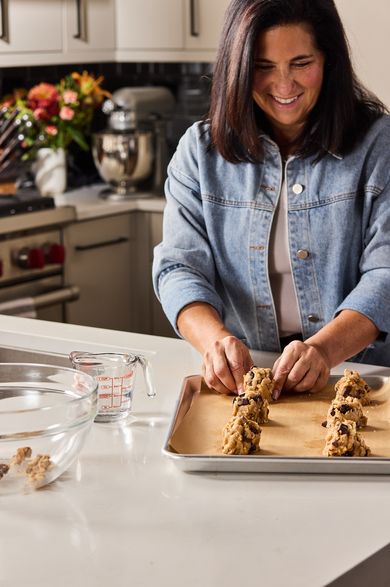

Started in our mom’s kitchen.
Michele is a chemical engineer by trade and a baker by heart. She is someone who makes hard things look easy and spent years getting this one to come out the same no matter whose hands were in the bowl.
— Erica, Natalie & Marc
Read the whole story